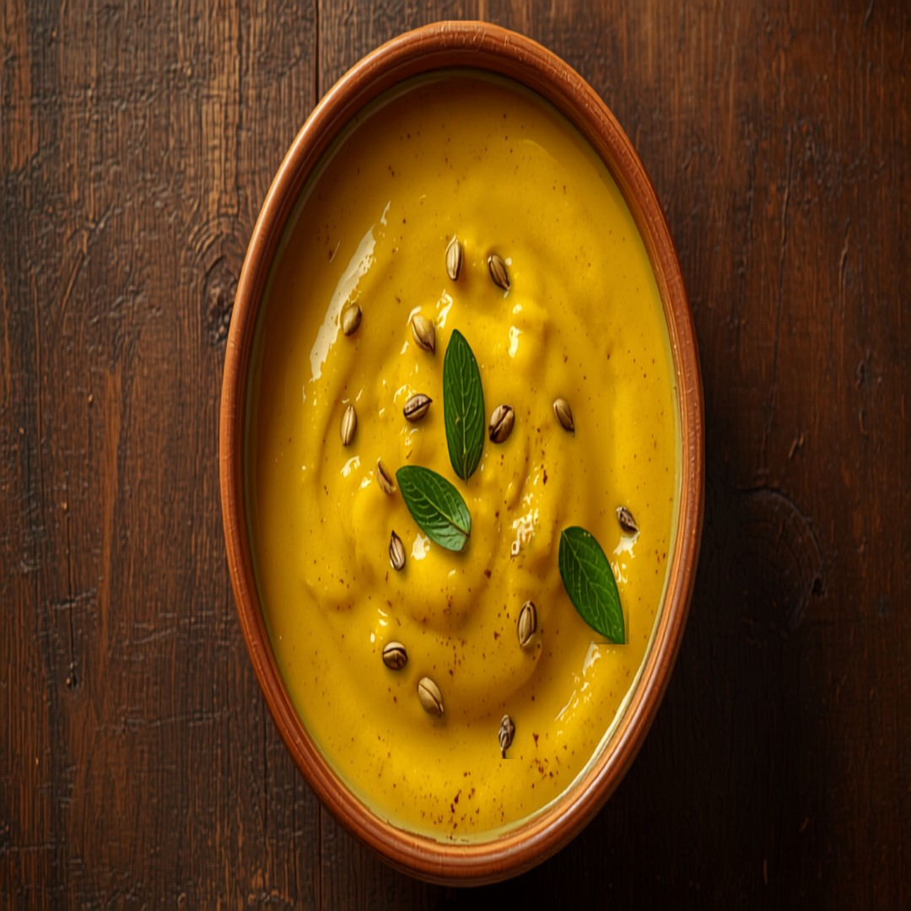

Un auténtico curry ácido de yogur y harina de garbanzo del norte de la India, con un tadka de semillas de mostaza y hojas de curry -- reconfortante, rico en proteína, y naturalmente sin gluten.
Información Nutricional (por porción)
130
Calorías
12g
Carbohidratos
7g
Proteína
6g
Grasa
1g
Fibra
~30
IG Est.
Por qué encaja en una dieta apta para diabéticos
Con solo 12g de carbohidratos por porción, es una opción más ligera en carbohidratos sin necesidad de un enfoque estrictamente bajo en carbohidratos, y su índice glucémico estimado de ~30 significa que los carbohidratos que tiene tienden a digerirse lentamente en lugar de elevar rápido el azúcar en la sangre.
Ingredientes
- 1 1/2 taza355 ml yogur natural
- 3 cda45 ml harina de garbanzo
- 1/4 cdta1 ml cúrcuma
- 1/2 cdta2 ml semillas de mostaza
- 1/2 cdta2 ml semillas de comino
- 8 entero8 entero hojas de curry
- 1 entero1 entero chile verde
- 1 cdta5 ml jengibre
- 1/4 cdta1 ml sal
- 1 cda15 ml aceite
- 2 taza475 ml agua
Ya está en la app
Esta receta ya está en la app de GlucoBeacon — agrégala directamente a tu lista de compras y a tu control de carbohidratos diario en un toque, gratis.
También en la app — gratis
- 🍽️ Asesor de Restaurantes — más de 3,700 platillos de 53 cadenas
- 📷 Cámara de Comida con IA — apunta, escanea y conoce tus carbohidratos al instante
- 🡺 Estimador de A1C — a partir de tus lecturas registradas
Instrucciones
- Bate el yogur y la harina de garbanzo junto con el agua hasta que quede suave y sin grumos.
- Calienta el aceite en una olla y añade las semillas de mostaza, las semillas de comino y las hojas de curry hasta que chisporroteen.
- Añade el jengibre y el chile verde, y sofríe 1 minuto.
- Vierte la mezcla de yogur junto con la cúrcuma, y deja que hierva suavemente, revolviendo con frecuencia para evitar que se corte.
- Cocina a fuego lento 12-15 minutos hasta que espese ligeramente, sazona con sal y sirve caliente.